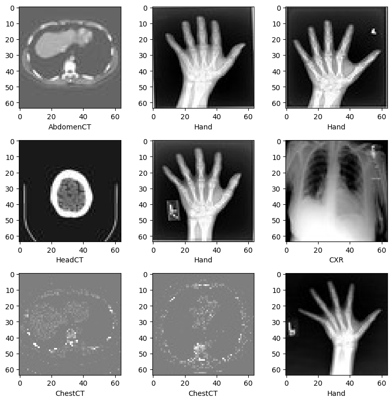
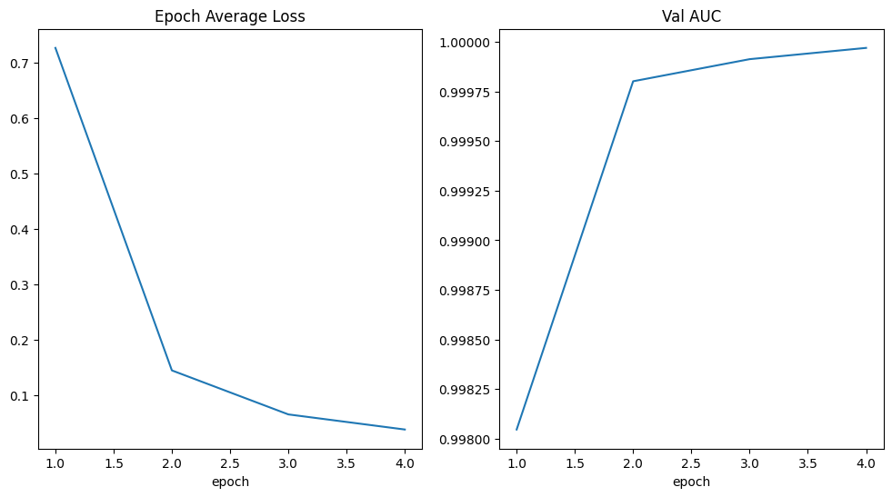

!python -c "import monai" || pip install -q "monai-weekly[pillow, tqdm]"
!python -c "import matplotlib" || pip install -q matplotlibMedical Image Classification Tutorial with the MedNIST Dataset
Setup environment
Setup imports
import os
import shutil
import tempfile
import matplotlib.pyplot as plt
import PIL
import torch
# from torch.utils.tensorboard import SummaryWriter
import numpy as np
from sklearn.metrics import classification_report
from monai.apps import download_and_extract
from monai.config import print_config
from monai.data import decollate_batch, DataLoader
from monai.metrics import ROCAUCMetric
from monai.networks.nets import DenseNet121
from monai.transforms import (
Activations,
EnsureChannelFirst,
AsDiscrete,
Compose,
LoadImage,
RandFlip,
RandRotate,
RandZoom,
ScaleIntensity,
)
from monai.utils import set_determinism
print_config()MONAI version: 1.5.2
Numpy version: 2.4.2
Pytorch version: 2.9.1+cu128
MONAI flags: HAS_EXT = False, USE_COMPILED = False, USE_META_DICT = False
MONAI rev id: d18565fb3e4fd8c556707f91ac280a2dc3f681c1
MONAI __file__: /home/<username>/miniforge3/envs/biomonai_latest/lib/python3.11/site-packages/monai/__init__.py
Optional dependencies:
Pytorch Ignite version: NOT INSTALLED or UNKNOWN VERSION.
ITK version: NOT INSTALLED or UNKNOWN VERSION.
Nibabel version: 5.3.3
scikit-image version: 0.26.0
scipy version: 1.17.0
Pillow version: 12.1.1
Tensorboard version: NOT INSTALLED or UNKNOWN VERSION.
gdown version: NOT INSTALLED or UNKNOWN VERSION.
TorchVision version: 0.24.1+cu128
tqdm version: 4.67.3
lmdb version: NOT INSTALLED or UNKNOWN VERSION.
psutil version: 7.2.2
pandas version: 3.0.0
einops version: 0.8.2
transformers version: NOT INSTALLED or UNKNOWN VERSION.
mlflow version: NOT INSTALLED or UNKNOWN VERSION.
pynrrd version: NOT INSTALLED or UNKNOWN VERSION.
clearml version: NOT INSTALLED or UNKNOWN VERSION.
For details about installing the optional dependencies, please visit:
https://docs.monai.io/en/latest/installation.html#installing-the-recommended-dependencies
Setup data directory
You can specify a directory with the MONAI_DATA_DIRECTORY environment variable.
This allows you to save results and reuse downloads.
If not specified a temporary directory will be used.
directory = os.environ.get("MONAI_DATA_DIRECTORY")
if directory is not None:
os.makedirs(directory, exist_ok=True)
root_dir = tempfile.mkdtemp() if directory is None else directory
print(root_dir)/tmp/tmpat69a9a9Download dataset
The MedNIST dataset was gathered from several sets from TCIA, the RSNA Bone Age Challenge, and the NIH Chest X-ray dataset.
The dataset is kindly made available by Dr. Bradley J. Erickson M.D., Ph.D. (Department of Radiology, Mayo Clinic) under the Creative Commons CC BY-SA 4.0 license.
If you use the MedNIST dataset, please acknowledge the source.
resource = "https://github.com/Project-MONAI/MONAI-extra-test-data/releases/download/0.8.1/MedNIST.tar.gz"
md5 = "0bc7306e7427e00ad1c5526a6677552d"
compressed_file = os.path.join(root_dir, "MedNIST.tar.gz")
data_dir = os.path.join(root_dir, "MedNIST")
if not os.path.exists(data_dir):
download_and_extract(resource, compressed_file, root_dir, md5)MedNIST.tar.gz: 59.0MB [00:05, 10.6MB/s] 2026-04-04 19:18:31,280 - INFO - Downloaded: /tmp/tmpat69a9a9/MedNIST.tar.gz2026-04-04 19:18:31,338 - INFO - Verified 'MedNIST.tar.gz', md5: 0bc7306e7427e00ad1c5526a6677552d.
2026-04-04 19:18:31,339 - INFO - Writing into directory: /tmp/tmpat69a9a9.Set deterministic training for reproducibility
set_determinism(seed=0)Read image filenames from the dataset folders
First of all, check the dataset files and show some statistics.
There are 6 folders in the dataset: Hand, AbdomenCT, CXR, ChestCT, BreastMRI, HeadCT,
which should be used as the labels to train our classification model.
class_names = sorted(x for x in os.listdir(data_dir) if os.path.isdir(os.path.join(data_dir, x)))
num_class = len(class_names)
image_files = [
[os.path.join(data_dir, class_names[i], x) for x in os.listdir(os.path.join(data_dir, class_names[i]))]
for i in range(num_class)
]
num_each = [len(image_files[i]) for i in range(num_class)]
image_files_list = []
image_class = []
for i in range(num_class):
image_files_list.extend(image_files[i])
image_class.extend([i] * num_each[i])
num_total = len(image_class)
image_width, image_height = PIL.Image.open(image_files_list[0]).size
print(f"Total image count: {num_total}")
print(f"Image dimensions: {image_width} x {image_height}")
print(f"Label names: {class_names}")
print(f"Label counts: {num_each}")Total image count: 58954
Image dimensions: 64 x 64
Label names: ['AbdomenCT', 'BreastMRI', 'CXR', 'ChestCT', 'Hand', 'HeadCT']
Label counts: [10000, 8954, 10000, 10000, 10000, 10000]Randomly pick images from the dataset to visualize and check
plt.subplots(3, 3, figsize=(8, 8))
for i, k in enumerate(np.random.randint(num_total, size=9)):
im = PIL.Image.open(image_files_list[k])
arr = np.array(im)
plt.subplot(3, 3, i + 1)
plt.xlabel(class_names[image_class[k]])
plt.imshow(arr, cmap="gray", vmin=0, vmax=255)
plt.tight_layout()
plt.show()
Prepare training, validation and test data lists
Randomly select 10% of the dataset as validation and 10% as test.
val_frac = 0.1
test_frac = 0.1
length = len(image_files_list)
indices = np.arange(length)
np.random.shuffle(indices)
test_split = int(test_frac * length)
val_split = int(val_frac * length) + test_split
test_indices = indices[:test_split]
val_indices = indices[test_split:val_split]
train_indices = indices[val_split:]
train_x = [image_files_list[i] for i in train_indices]
train_y = [image_class[i] for i in train_indices]
val_x = [image_files_list[i] for i in val_indices]
val_y = [image_class[i] for i in val_indices]
test_x = [image_files_list[i] for i in test_indices]
test_y = [image_class[i] for i in test_indices]
print(f"Training count: {len(train_x)}, Validation count: " f"{len(val_x)}, Test count: {len(test_x)}")Training count: 47164, Validation count: 5895, Test count: 5895Define MONAI transforms, Dataset and Dataloader to pre-process data
train_transforms = Compose(
[
LoadImage(image_only=True),
EnsureChannelFirst(),
ScaleIntensity(),
RandRotate(range_x=np.pi / 12, prob=0.5, keep_size=True),
RandFlip(spatial_axis=0, prob=0.5),
RandZoom(min_zoom=0.9, max_zoom=1.1, prob=0.5),
]
)
val_transforms = Compose([LoadImage(image_only=True), EnsureChannelFirst(), ScaleIntensity()])
y_pred_trans = Compose([Activations(softmax=True)])
y_trans = Compose([AsDiscrete(to_onehot=num_class)])class MedNISTDataset(torch.utils.data.Dataset):
def __init__(self, image_files, labels, transforms):
self.image_files = image_files
self.labels = labels
self.transforms = transforms
def __len__(self):
return len(self.image_files)
def __getitem__(self, index):
return self.transforms(self.image_files[index]), self.labels[index]
train_ds = MedNISTDataset(train_x, train_y, train_transforms)
train_loader = DataLoader(train_ds, batch_size=300, shuffle=True, num_workers=10)
val_ds = MedNISTDataset(val_x, val_y, val_transforms)
val_loader = DataLoader(val_ds, batch_size=300, num_workers=10)
test_ds = MedNISTDataset(test_x, test_y, val_transforms)
test_loader = DataLoader(test_ds, batch_size=300, num_workers=10)Define network and optimizer
- Set learning rate for how much the model is updated per batch.
- Set total epoch number, as we have shuffle and random transforms, so the training data of every epoch is different.
And as this is just a get start tutorial, let’s just train 4 epochs.
If train 10 epochs, the model can achieve 100% accuracy on test dataset. - Use DenseNet from MONAI and move to GPU device, this DenseNet can support both 2D and 3D classification tasks.
- Use Adam optimizer.
device = torch.device("cuda" if torch.cuda.is_available() else "cpu")
model = DenseNet121(spatial_dims=2, in_channels=1, out_channels=num_class).to(device)
loss_function = torch.nn.CrossEntropyLoss()
optimizer = torch.optim.Adam(model.parameters(), 1e-5)
max_epochs = 4
val_interval = 1
auc_metric = ROCAUCMetric()Model training
Execute a typical PyTorch training that run epoch loop and step loop, and do validation after every epoch.
Will save the model weights to file if got best validation accuracy.
import torch
torch.cuda.empty_cache()
torch.cuda.reset_peak_memory_stats()best_metric = -1
best_metric_epoch = -1
epoch_loss_values = []
metric_values = []
# writer = SummaryWriter()
for epoch in range(max_epochs):
print("-" * 10)
print(f"epoch {epoch + 1}/{max_epochs}")
model.train()
epoch_loss = 0
step = 0
for batch_data in train_loader:
step += 1
inputs, labels = batch_data[0].to(device), batch_data[1].to(device)
optimizer.zero_grad()
outputs = model(inputs)
loss = loss_function(outputs, labels)
loss.backward()
optimizer.step()
epoch_loss += loss.item()
print(f"{step}/{len(train_ds) // train_loader.batch_size}, " f"train_loss: {loss.item():.4f}")
epoch_len = len(train_ds) // train_loader.batch_size
# writer.add_scalar("train_loss", loss.item(), epoch_len * epoch + step)
epoch_loss /= step
epoch_loss_values.append(epoch_loss)
print(f"epoch {epoch + 1} average loss: {epoch_loss:.4f}")
if (epoch + 1) % val_interval == 0:
model.eval()
with torch.no_grad():
y_pred = torch.tensor([], dtype=torch.float32, device=device)
y = torch.tensor([], dtype=torch.long, device=device)
for val_data in val_loader:
val_images, val_labels = (
val_data[0].to(device),
val_data[1].to(device),
)
y_pred = torch.cat([y_pred, model(val_images)], dim=0)
y = torch.cat([y, val_labels], dim=0)
y_onehot = [y_trans(i) for i in decollate_batch(y, detach=False)]
y_pred_act = [y_pred_trans(i) for i in decollate_batch(y_pred)]
auc_metric(y_pred_act, y_onehot)
result = auc_metric.aggregate()
auc_metric.reset()
del y_pred_act, y_onehot
metric_values.append(result)
acc_value = torch.eq(y_pred.argmax(dim=1), y)
acc_metric = acc_value.sum().item() / len(acc_value)
if result > best_metric:
best_metric = result
best_metric_epoch = epoch + 1
torch.save(model.state_dict(), os.path.join(root_dir, "best_metric_model.pth"))
print("saved new best metric model")
print(
f"current epoch: {epoch + 1} current AUC: {result:.4f}"
f" current accuracy: {acc_metric:.4f}"
f" best AUC: {best_metric:.4f}"
f" at epoch: {best_metric_epoch}"
)
# writer.add_scalar("val_accuracy", acc_metric, epoch + 1)
print(f"train completed, best_metric: {best_metric:.4f} " f"at epoch: {best_metric_epoch}")
# writer.close()----------
epoch 1/4
1/157, train_loss: 1.7902
2/157, train_loss: 1.7524
3/157, train_loss: 1.7412
4/157, train_loss: 1.7145
5/157, train_loss: 1.6806
6/157, train_loss: 1.6528
7/157, train_loss: 1.6395
8/157, train_loss: 1.5903
9/157, train_loss: 1.5837
10/157, train_loss: 1.5634
11/157, train_loss: 1.5221
12/157, train_loss: 1.4980
13/157, train_loss: 1.4803
14/157, train_loss: 1.4641
15/157, train_loss: 1.4306
16/157, train_loss: 1.4149
17/157, train_loss: 1.3990
18/157, train_loss: 1.3784
19/157, train_loss: 1.3450
20/157, train_loss: 1.3611
21/157, train_loss: 1.3147
22/157, train_loss: 1.2992
23/157, train_loss: 1.2765
24/157, train_loss: 1.2667
25/157, train_loss: 1.2627
26/157, train_loss: 1.2852
27/157, train_loss: 1.2033
28/157, train_loss: 1.2259
29/157, train_loss: 1.1679
30/157, train_loss: 1.1337
31/157, train_loss: 1.1356
32/157, train_loss: 1.1128
33/157, train_loss: 1.1217
34/157, train_loss: 1.0980
35/157, train_loss: 1.1004
36/157, train_loss: 1.0667
37/157, train_loss: 1.0618
38/157, train_loss: 1.0380
39/157, train_loss: 1.0113
40/157, train_loss: 1.0004
41/157, train_loss: 1.0321
42/157, train_loss: 0.9845
43/157, train_loss: 0.9613
44/157, train_loss: 0.9846
45/157, train_loss: 0.9392
46/157, train_loss: 0.9230
47/157, train_loss: 0.9263
48/157, train_loss: 0.9219
49/157, train_loss: 0.9024
50/157, train_loss: 0.8811
51/157, train_loss: 0.8343
52/157, train_loss: 0.8874
53/157, train_loss: 0.8459
54/157, train_loss: 0.8415
55/157, train_loss: 0.8291
56/157, train_loss: 0.8233
57/157, train_loss: 0.8090
58/157, train_loss: 0.7527
59/157, train_loss: 0.7996
60/157, train_loss: 0.7875
61/157, train_loss: 0.7673
62/157, train_loss: 0.7518
63/157, train_loss: 0.7661
64/157, train_loss: 0.6997
65/157, train_loss: 0.7272
66/157, train_loss: 0.7655
67/157, train_loss: 0.6831
68/157, train_loss: 0.6700
69/157, train_loss: 0.7077
70/157, train_loss: 0.6753
71/157, train_loss: 0.6329
72/157, train_loss: 0.6807
73/157, train_loss: 0.6587
74/157, train_loss: 0.6321
75/157, train_loss: 0.6207
76/157, train_loss: 0.6228
77/157, train_loss: 0.6181
78/157, train_loss: 0.6079
79/157, train_loss: 0.6107
80/157, train_loss: 0.6035
81/157, train_loss: 0.5773
82/157, train_loss: 0.5947
83/157, train_loss: 0.5572
84/157, train_loss: 0.5551
85/157, train_loss: 0.5252
86/157, train_loss: 0.5385
87/157, train_loss: 0.5345
88/157, train_loss: 0.5403
89/157, train_loss: 0.5070
90/157, train_loss: 0.5126
91/157, train_loss: 0.5388
92/157, train_loss: 0.4958
93/157, train_loss: 0.4999
94/157, train_loss: 0.4833
95/157, train_loss: 0.4807
96/157, train_loss: 0.4909
97/157, train_loss: 0.4586
98/157, train_loss: 0.4697
99/157, train_loss: 0.4534
100/157, train_loss: 0.4689
101/157, train_loss: 0.4666
102/157, train_loss: 0.4566
103/157, train_loss: 0.4628
104/157, train_loss: 0.4247
105/157, train_loss: 0.4351
106/157, train_loss: 0.4075
107/157, train_loss: 0.4107
108/157, train_loss: 0.4409
109/157, train_loss: 0.4132
110/157, train_loss: 0.3919
111/157, train_loss: 0.3472
112/157, train_loss: 0.3882
113/157, train_loss: 0.3944
114/157, train_loss: 0.3942
115/157, train_loss: 0.3959
116/157, train_loss: 0.3462
117/157, train_loss: 0.3771
118/157, train_loss: 0.3783
119/157, train_loss: 0.3641
120/157, train_loss: 0.3415
121/157, train_loss: 0.3450
122/157, train_loss: 0.3530
123/157, train_loss: 0.3329
124/157, train_loss: 0.3111
125/157, train_loss: 0.3156
126/157, train_loss: 0.3292
127/157, train_loss: 0.3232
128/157, train_loss: 0.3474
129/157, train_loss: 0.3439
130/157, train_loss: 0.3453
131/157, train_loss: 0.3290
132/157, train_loss: 0.3095
133/157, train_loss: 0.3429
134/157, train_loss: 0.2998
135/157, train_loss: 0.3405
136/157, train_loss: 0.3353
137/157, train_loss: 0.3324
138/157, train_loss: 0.2961
139/157, train_loss: 0.2782
140/157, train_loss: 0.2745
141/157, train_loss: 0.2824
142/157, train_loss: 0.2576
143/157, train_loss: 0.2800
144/157, train_loss: 0.2661
145/157, train_loss: 0.2732
146/157, train_loss: 0.2479
147/157, train_loss: 0.2888
148/157, train_loss: 0.2860
149/157, train_loss: 0.2554
150/157, train_loss: 0.2765
151/157, train_loss: 0.2509
152/157, train_loss: 0.2730
153/157, train_loss: 0.2463
154/157, train_loss: 0.2274
155/157, train_loss: 0.2781
156/157, train_loss: 0.2752
157/157, train_loss: 0.2133
158/157, train_loss: 0.2740
epoch 1 average loss: 0.7273
saved new best metric model
current epoch: 1 current AUC: 0.9980 current accuracy: 0.9673 best AUC: 0.9980 at epoch: 1
----------
epoch 2/4
1/157, train_loss: 0.2496
2/157, train_loss: 0.2313
3/157, train_loss: 0.2370
4/157, train_loss: 0.2380
5/157, train_loss: 0.2121
6/157, train_loss: 0.2262
7/157, train_loss: 0.2204
8/157, train_loss: 0.2137
9/157, train_loss: 0.1955
10/157, train_loss: 0.2428
11/157, train_loss: 0.2428
12/157, train_loss: 0.2327
13/157, train_loss: 0.2196
14/157, train_loss: 0.2101
15/157, train_loss: 0.2044
16/157, train_loss: 0.1890
17/157, train_loss: 0.2141
18/157, train_loss: 0.1919
19/157, train_loss: 0.2373
20/157, train_loss: 0.2266
21/157, train_loss: 0.2044
22/157, train_loss: 0.2545
23/157, train_loss: 0.2169
24/157, train_loss: 0.1956
25/157, train_loss: 0.2334
26/157, train_loss: 0.2184
27/157, train_loss: 0.2217
28/157, train_loss: 0.2002
29/157, train_loss: 0.1843
30/157, train_loss: 0.1634
31/157, train_loss: 0.1773
32/157, train_loss: 0.1591
33/157, train_loss: 0.1732
34/157, train_loss: 0.1618
35/157, train_loss: 0.1611
36/157, train_loss: 0.1954
37/157, train_loss: 0.2002
38/157, train_loss: 0.1643
39/157, train_loss: 0.1907
40/157, train_loss: 0.1930
41/157, train_loss: 0.1844
42/157, train_loss: 0.1534
43/157, train_loss: 0.2311
44/157, train_loss: 0.1687
45/157, train_loss: 0.1872
46/157, train_loss: 0.1917
47/157, train_loss: 0.1691
48/157, train_loss: 0.1644
49/157, train_loss: 0.1668
50/157, train_loss: 0.1744
51/157, train_loss: 0.1598
52/157, train_loss: 0.1683
53/157, train_loss: 0.1690
54/157, train_loss: 0.1566
55/157, train_loss: 0.1696
56/157, train_loss: 0.1439
57/157, train_loss: 0.1243
58/157, train_loss: 0.1443
59/157, train_loss: 0.1432
60/157, train_loss: 0.1932
61/157, train_loss: 0.1405
62/157, train_loss: 0.1513
63/157, train_loss: 0.1362
64/157, train_loss: 0.1441
65/157, train_loss: 0.1097
66/157, train_loss: 0.1764
67/157, train_loss: 0.1276
68/157, train_loss: 0.1480
69/157, train_loss: 0.1526
70/157, train_loss: 0.1474
71/157, train_loss: 0.1511
72/157, train_loss: 0.1249
73/157, train_loss: 0.1616
74/157, train_loss: 0.1402
75/157, train_loss: 0.1131
76/157, train_loss: 0.1194
77/157, train_loss: 0.1139
78/157, train_loss: 0.1494
79/157, train_loss: 0.1259
80/157, train_loss: 0.1212
81/157, train_loss: 0.1577
82/157, train_loss: 0.1255
83/157, train_loss: 0.1033
84/157, train_loss: 0.1249
85/157, train_loss: 0.1088
86/157, train_loss: 0.1670
87/157, train_loss: 0.1070
88/157, train_loss: 0.1063
89/157, train_loss: 0.1321
90/157, train_loss: 0.1413
91/157, train_loss: 0.1432
92/157, train_loss: 0.1462
93/157, train_loss: 0.1308
94/157, train_loss: 0.1212
95/157, train_loss: 0.1151
96/157, train_loss: 0.1029
97/157, train_loss: 0.1083
98/157, train_loss: 0.1071
99/157, train_loss: 0.0995
100/157, train_loss: 0.0990
101/157, train_loss: 0.1101
102/157, train_loss: 0.1245
103/157, train_loss: 0.1163
104/157, train_loss: 0.1218
105/157, train_loss: 0.1303
106/157, train_loss: 0.1339
107/157, train_loss: 0.1085
108/157, train_loss: 0.0968
109/157, train_loss: 0.0997
110/157, train_loss: 0.1070
111/157, train_loss: 0.0998
112/157, train_loss: 0.1077
113/157, train_loss: 0.1168
114/157, train_loss: 0.1004
115/157, train_loss: 0.1150
116/157, train_loss: 0.0962
117/157, train_loss: 0.1163
118/157, train_loss: 0.1080
119/157, train_loss: 0.1043
120/157, train_loss: 0.1075
121/157, train_loss: 0.1213
122/157, train_loss: 0.1230
123/157, train_loss: 0.0947
124/157, train_loss: 0.0866
125/157, train_loss: 0.0900
126/157, train_loss: 0.1063
127/157, train_loss: 0.1353
128/157, train_loss: 0.1066
129/157, train_loss: 0.1156
130/157, train_loss: 0.1100
131/157, train_loss: 0.0973
132/157, train_loss: 0.0867
133/157, train_loss: 0.1037
134/157, train_loss: 0.1108
135/157, train_loss: 0.0939
136/157, train_loss: 0.0974
137/157, train_loss: 0.1042
138/157, train_loss: 0.1013
139/157, train_loss: 0.0943
140/157, train_loss: 0.1167
141/157, train_loss: 0.0870
142/157, train_loss: 0.0919
143/157, train_loss: 0.0829
144/157, train_loss: 0.0900
145/157, train_loss: 0.0976
146/157, train_loss: 0.0936
147/157, train_loss: 0.0919
148/157, train_loss: 0.0838
149/157, train_loss: 0.0882
150/157, train_loss: 0.1072
151/157, train_loss: 0.1000
152/157, train_loss: 0.0949
153/157, train_loss: 0.0933
154/157, train_loss: 0.0860
155/157, train_loss: 0.0902
156/157, train_loss: 0.0949
157/157, train_loss: 0.0782
158/157, train_loss: 0.1105
epoch 2 average loss: 0.1446
saved new best metric model
current epoch: 2 current AUC: 0.9998 current accuracy: 0.9869 best AUC: 0.9998 at epoch: 2
----------
epoch 3/4
1/157, train_loss: 0.0822
2/157, train_loss: 0.0649
3/157, train_loss: 0.0867
4/157, train_loss: 0.0708
5/157, train_loss: 0.0669
6/157, train_loss: 0.0803
7/157, train_loss: 0.0815
8/157, train_loss: 0.0915
9/157, train_loss: 0.0690
10/157, train_loss: 0.0987
11/157, train_loss: 0.0976
12/157, train_loss: 0.1164
13/157, train_loss: 0.0758
14/157, train_loss: 0.0668
15/157, train_loss: 0.1040
16/157, train_loss: 0.0616
17/157, train_loss: 0.0699
18/157, train_loss: 0.0826
19/157, train_loss: 0.0686
20/157, train_loss: 0.0631
21/157, train_loss: 0.0812
22/157, train_loss: 0.0932
23/157, train_loss: 0.0781
24/157, train_loss: 0.0726
25/157, train_loss: 0.1380
26/157, train_loss: 0.0704
27/157, train_loss: 0.0857
28/157, train_loss: 0.0644
29/157, train_loss: 0.0675
30/157, train_loss: 0.0876
31/157, train_loss: 0.0686
32/157, train_loss: 0.0860
33/157, train_loss: 0.0809
34/157, train_loss: 0.0551
35/157, train_loss: 0.0841
36/157, train_loss: 0.0635
37/157, train_loss: 0.0825
38/157, train_loss: 0.0793
39/157, train_loss: 0.0635
40/157, train_loss: 0.0700
41/157, train_loss: 0.0701
42/157, train_loss: 0.0918
43/157, train_loss: 0.0654
44/157, train_loss: 0.0657
45/157, train_loss: 0.0685
46/157, train_loss: 0.0931
47/157, train_loss: 0.0689
48/157, train_loss: 0.1014
49/157, train_loss: 0.0795
50/157, train_loss: 0.0657
51/157, train_loss: 0.0637
52/157, train_loss: 0.0599
53/157, train_loss: 0.0694
54/157, train_loss: 0.0904
55/157, train_loss: 0.1027
56/157, train_loss: 0.0674
57/157, train_loss: 0.0713
58/157, train_loss: 0.1082
59/157, train_loss: 0.0768
60/157, train_loss: 0.0728
61/157, train_loss: 0.0708
62/157, train_loss: 0.0567
63/157, train_loss: 0.0513
64/157, train_loss: 0.0550
65/157, train_loss: 0.0495
66/157, train_loss: 0.0684
67/157, train_loss: 0.0566
68/157, train_loss: 0.0748
69/157, train_loss: 0.0603
70/157, train_loss: 0.0606
71/157, train_loss: 0.0774
72/157, train_loss: 0.0689
73/157, train_loss: 0.0758
74/157, train_loss: 0.0555
75/157, train_loss: 0.0622
76/157, train_loss: 0.0647
77/157, train_loss: 0.0454
78/157, train_loss: 0.0624
79/157, train_loss: 0.0519
80/157, train_loss: 0.0757
81/157, train_loss: 0.0558
82/157, train_loss: 0.0594
83/157, train_loss: 0.0783
84/157, train_loss: 0.0749
85/157, train_loss: 0.0773
86/157, train_loss: 0.0901
87/157, train_loss: 0.0553
88/157, train_loss: 0.0490
89/157, train_loss: 0.0524
90/157, train_loss: 0.0535
91/157, train_loss: 0.0534
92/157, train_loss: 0.0564
93/157, train_loss: 0.0468
94/157, train_loss: 0.0534
95/157, train_loss: 0.0700
96/157, train_loss: 0.0718
97/157, train_loss: 0.0887
98/157, train_loss: 0.0404
99/157, train_loss: 0.0508
100/157, train_loss: 0.0525
101/157, train_loss: 0.0427
102/157, train_loss: 0.0514
103/157, train_loss: 0.0492
104/157, train_loss: 0.0508
105/157, train_loss: 0.0857
106/157, train_loss: 0.0623
107/157, train_loss: 0.0545
108/157, train_loss: 0.0618
109/157, train_loss: 0.0705
110/157, train_loss: 0.0460
111/157, train_loss: 0.0633
112/157, train_loss: 0.0698
113/157, train_loss: 0.0492
114/157, train_loss: 0.0577
115/157, train_loss: 0.0497
116/157, train_loss: 0.0462
117/157, train_loss: 0.0451
118/157, train_loss: 0.0369
119/157, train_loss: 0.0748
120/157, train_loss: 0.0518
121/157, train_loss: 0.0437
122/157, train_loss: 0.0587
123/157, train_loss: 0.0398
124/157, train_loss: 0.0457
125/157, train_loss: 0.0450
126/157, train_loss: 0.0593
127/157, train_loss: 0.0655
128/157, train_loss: 0.0593
129/157, train_loss: 0.0395
130/157, train_loss: 0.0479
131/157, train_loss: 0.0553
132/157, train_loss: 0.0747
133/157, train_loss: 0.0413
134/157, train_loss: 0.0451
135/157, train_loss: 0.0450
136/157, train_loss: 0.0429
137/157, train_loss: 0.0535
138/157, train_loss: 0.0510
139/157, train_loss: 0.0523
140/157, train_loss: 0.0470
141/157, train_loss: 0.0499
142/157, train_loss: 0.0336
143/157, train_loss: 0.0482
144/157, train_loss: 0.0316
145/157, train_loss: 0.0911
146/157, train_loss: 0.0678
147/157, train_loss: 0.0402
148/157, train_loss: 0.0565
149/157, train_loss: 0.0532
150/157, train_loss: 0.0435
151/157, train_loss: 0.0510
152/157, train_loss: 0.0387
153/157, train_loss: 0.0474
154/157, train_loss: 0.0765
155/157, train_loss: 0.0375
156/157, train_loss: 0.0666
157/157, train_loss: 0.0440
158/157, train_loss: 0.0804
epoch 3 average loss: 0.0651
saved new best metric model
current epoch: 3 current AUC: 0.9999 current accuracy: 0.9927 best AUC: 0.9999 at epoch: 3
----------
epoch 4/4
1/157, train_loss: 0.0454
2/157, train_loss: 0.0454
3/157, train_loss: 0.0559
4/157, train_loss: 0.0456
5/157, train_loss: 0.0439
6/157, train_loss: 0.0529
7/157, train_loss: 0.0480
8/157, train_loss: 0.0379
9/157, train_loss: 0.0246
10/157, train_loss: 0.0325
11/157, train_loss: 0.0616
12/157, train_loss: 0.0348
13/157, train_loss: 0.0542
14/157, train_loss: 0.0485
15/157, train_loss: 0.0403
16/157, train_loss: 0.0465
17/157, train_loss: 0.0330
18/157, train_loss: 0.0419
19/157, train_loss: 0.0366
20/157, train_loss: 0.0435
21/157, train_loss: 0.0289
22/157, train_loss: 0.0535
23/157, train_loss: 0.0562
24/157, train_loss: 0.0327
25/157, train_loss: 0.0398
26/157, train_loss: 0.0378
27/157, train_loss: 0.0511
28/157, train_loss: 0.0331
29/157, train_loss: 0.0472
30/157, train_loss: 0.0372
31/157, train_loss: 0.0334
32/157, train_loss: 0.0392
33/157, train_loss: 0.0567
34/157, train_loss: 0.0436
35/157, train_loss: 0.0503
36/157, train_loss: 0.0481
37/157, train_loss: 0.0543
38/157, train_loss: 0.0638
39/157, train_loss: 0.0420
40/157, train_loss: 0.0402
41/157, train_loss: 0.0436
42/157, train_loss: 0.0297
43/157, train_loss: 0.0730
44/157, train_loss: 0.0304
45/157, train_loss: 0.0446
46/157, train_loss: 0.0358
47/157, train_loss: 0.0497
48/157, train_loss: 0.0323
49/157, train_loss: 0.0411
50/157, train_loss: 0.0315
51/157, train_loss: 0.0497
52/157, train_loss: 0.0398
53/157, train_loss: 0.0279
54/157, train_loss: 0.0289
55/157, train_loss: 0.0504
56/157, train_loss: 0.0376
57/157, train_loss: 0.0362
58/157, train_loss: 0.0334
59/157, train_loss: 0.0349
60/157, train_loss: 0.0239
61/157, train_loss: 0.0419
62/157, train_loss: 0.0480
63/157, train_loss: 0.0410
64/157, train_loss: 0.0292
65/157, train_loss: 0.0487
66/157, train_loss: 0.0314
67/157, train_loss: 0.0299
68/157, train_loss: 0.0476
69/157, train_loss: 0.0389
70/157, train_loss: 0.0348
71/157, train_loss: 0.0281
72/157, train_loss: 0.0412
73/157, train_loss: 0.0305
74/157, train_loss: 0.0282
75/157, train_loss: 0.0397
76/157, train_loss: 0.0334
77/157, train_loss: 0.0479
78/157, train_loss: 0.0264
79/157, train_loss: 0.0430
80/157, train_loss: 0.0339
81/157, train_loss: 0.0481
82/157, train_loss: 0.0466
83/157, train_loss: 0.0483
84/157, train_loss: 0.0475
85/157, train_loss: 0.0233
86/157, train_loss: 0.0278
87/157, train_loss: 0.0367
88/157, train_loss: 0.0347
89/157, train_loss: 0.0519
90/157, train_loss: 0.0346
91/157, train_loss: 0.0459
92/157, train_loss: 0.0456
93/157, train_loss: 0.0357
94/157, train_loss: 0.0531
95/157, train_loss: 0.0551
96/157, train_loss: 0.0567
97/157, train_loss: 0.0393
98/157, train_loss: 0.0394
99/157, train_loss: 0.0458
100/157, train_loss: 0.0297
101/157, train_loss: 0.0323
102/157, train_loss: 0.0518
103/157, train_loss: 0.0211
104/157, train_loss: 0.0274
105/157, train_loss: 0.0415
106/157, train_loss: 0.0266
107/157, train_loss: 0.0281
108/157, train_loss: 0.0547
109/157, train_loss: 0.0316
110/157, train_loss: 0.0310
111/157, train_loss: 0.0317
112/157, train_loss: 0.0412
113/157, train_loss: 0.0376
114/157, train_loss: 0.0330
115/157, train_loss: 0.0293
116/157, train_loss: 0.0378
117/157, train_loss: 0.0265
118/157, train_loss: 0.0232
119/157, train_loss: 0.0208
120/157, train_loss: 0.0590
121/157, train_loss: 0.0271
122/157, train_loss: 0.0279
123/157, train_loss: 0.0334
124/157, train_loss: 0.0298
125/157, train_loss: 0.0200
126/157, train_loss: 0.0269
127/157, train_loss: 0.0377
128/157, train_loss: 0.0390
129/157, train_loss: 0.0241
130/157, train_loss: 0.0330
131/157, train_loss: 0.0261
132/157, train_loss: 0.0278
133/157, train_loss: 0.0378
134/157, train_loss: 0.0240
135/157, train_loss: 0.0289
136/157, train_loss: 0.0416
137/157, train_loss: 0.0349
138/157, train_loss: 0.0340
139/157, train_loss: 0.0192
140/157, train_loss: 0.0377
141/157, train_loss: 0.0264
142/157, train_loss: 0.0309
143/157, train_loss: 0.0453
144/157, train_loss: 0.0354
145/157, train_loss: 0.0221
146/157, train_loss: 0.0449
147/157, train_loss: 0.0324
148/157, train_loss: 0.0380
149/157, train_loss: 0.0314
150/157, train_loss: 0.0271
151/157, train_loss: 0.0270
152/157, train_loss: 0.0213
153/157, train_loss: 0.0277
154/157, train_loss: 0.0307
155/157, train_loss: 0.0367
156/157, train_loss: 0.0260
157/157, train_loss: 0.0213
158/157, train_loss: 0.0281
epoch 4 average loss: 0.0378
saved new best metric model
current epoch: 4 current AUC: 1.0000 current accuracy: 0.9959 best AUC: 1.0000 at epoch: 4
train completed, best_metric: 1.0000 at epoch: 4
CPU times: user 52.8 s, sys: 6.93 s, total: 59.8 s
Wall time: 1min 3sPlot the loss and metric
plt.figure("train", (12, 6))
plt.subplot(1, 2, 1)
plt.title("Epoch Average Loss")
x = [i + 1 for i in range(len(epoch_loss_values))]
y = epoch_loss_values
plt.xlabel("epoch")
plt.plot(x, y)
plt.subplot(1, 2, 2)
plt.title("Val AUC")
x = [val_interval * (i + 1) for i in range(len(metric_values))]
y = metric_values
plt.xlabel("epoch")
plt.plot(x, y)
plt.show()
torch.cuda.max_memory_allocated() / 1024**23232.2939453125Evaluate the model on test dataset
After training and validation, we already got the best model on validation test.
We need to evaluate the model on test dataset to check whether it’s robust and not over-fitting.
We’ll use these predictions to generate a classification report.
model.load_state_dict(torch.load(os.path.join(root_dir, "best_metric_model.pth"), weights_only=True))
model.eval()
y_true = []
y_pred = []
with torch.no_grad():
for test_data in test_loader:
test_images, test_labels = (
test_data[0].to(device),
test_data[1].to(device),
)
pred = model(test_images).argmax(dim=1)
for i in range(len(pred)):
y_true.append(test_labels[i].item())
y_pred.append(pred[i].item())print(classification_report(y_true, y_pred, target_names=class_names, digits=4)) precision recall f1-score support
AbdomenCT 0.9900 0.9910 0.9905 995
BreastMRI 0.9954 0.9875 0.9914 880
CXR 1.0000 0.9939 0.9969 982
ChestCT 0.9912 1.0000 0.9956 1014
Hand 0.9952 0.9952 0.9952 1048
HeadCT 0.9959 0.9990 0.9974 976
accuracy 0.9946 5895
macro avg 0.9946 0.9944 0.9945 5895
weighted avg 0.9946 0.9946 0.9946 5895
Cleanup data directory
Remove directory if a temporary was used.
if directory is None:
shutil.rmtree(root_dir)